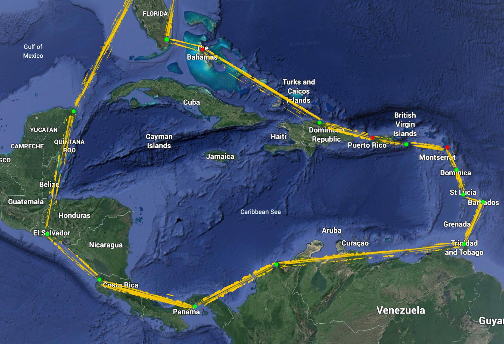

| Day |
Leaving |
Arriving |
Fligth duration |
| 1 |
Stafford Regional, KRMN |
Miami Homestead general aviation, KHST |
8 hours |
| 2 |
Miami Homestead general aviation, KHST |
San Andros Airport, MYAN |
1.5 hours |
| 3 |
|
|
rest day |
| 4 |
|
|
rest day |
| 5 |
San Andros Airport, MYAN |
Puerto Plata International Airport, MDPP |
5 hours |
| 6 |
Puerto Plata International Airport, MDPP |
Rafael Hernández Marín International Airport, TJBQ |
3 hours |
| 7 |
|
|
rest day |
| 8 |
Rafael Hernández Marín International Airport, TJBQ |
Henry E. Rohlsen Airport, TISX |
1.5 hours |
| 9 |
Henry E. Rohlsen Airport, TISX |
VC Bird International Airport, TAPA |
2 hours |
| 10 |
|
|
rest day |
| 11 |
VC Bird International Airport, TAPA |
Douglas-Charles Airport, TDPD |
2 hours |
| 12 |
|
|
rest day |
| 13 |
Douglas-Charles Airport, TDPD |
George F. L. Charles Airport, TLPC |
1 hour |
| 14 |
George F. L. Charles Airport, TLPC |
Grantley Adams International Airport, TBPB |
1 hour |
| 15 |
Grantley Adams International Airport, TBPB |
Piarco International Airport, TTPP |
1.5 hours |
| 16 |
Piarco International Airport, TTPP |
Simón Bolívar International Airport, SKSM |
12 hours |
| 17 |
Simón Bolívar International Airport, SKSM |
Albrook Gelabert Airport, MPMG |
2 hours |
| 18 |
Albrook Gelabert Airport, MPMG |
Daniel Oduber Quirós International Airport, MRLB |
4 hours |
| 19 |
Daniel Oduber Quirós International Airport, MRLB |
Ilopango International Airport, MSSS |
3 hours |
| 20 |
Ilopango International Airport, MSSS |
Cancun International Airport, MMUN |
3 hours |
| 21 |
Cancun International Airport, MMUN |
Savannah/Hilton Head International Airport, KSAV |
5 hours |
| 22 |
Savannah/Hilton Head International Airport, KSAV |
Stafford Regional, KRMN |
2.5 hours |
